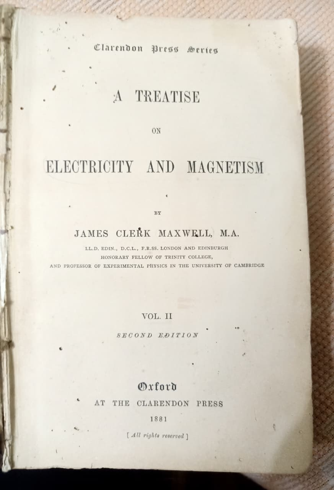
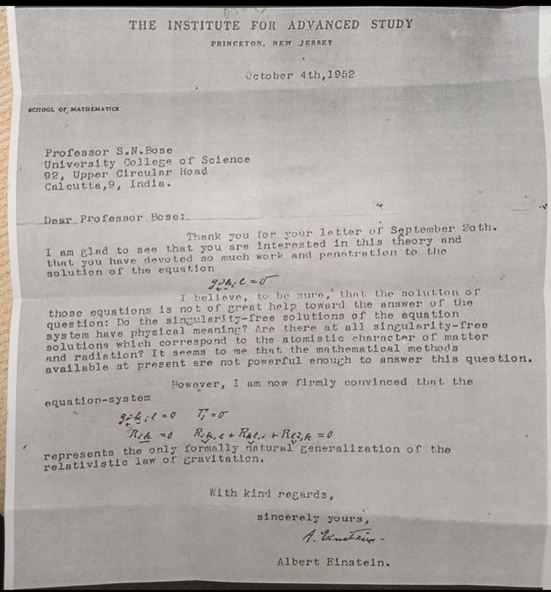
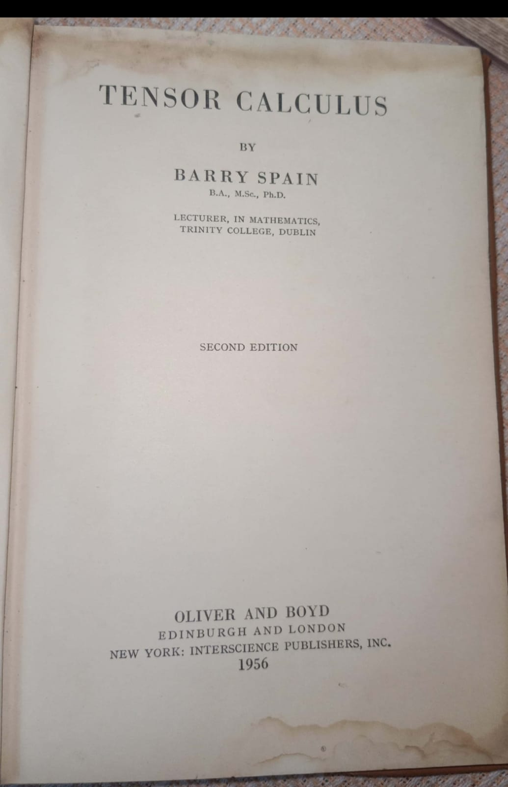
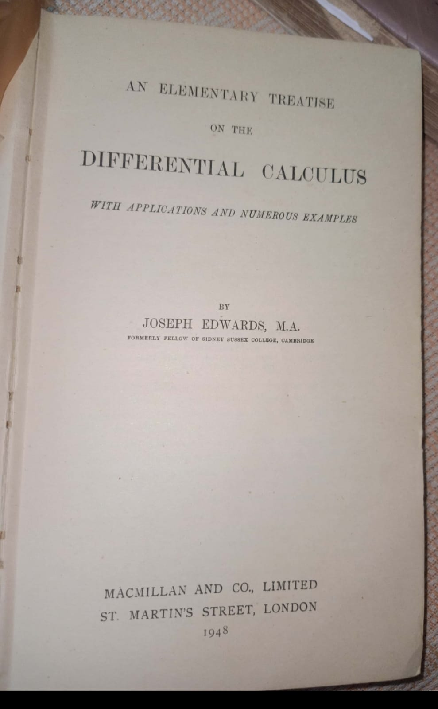
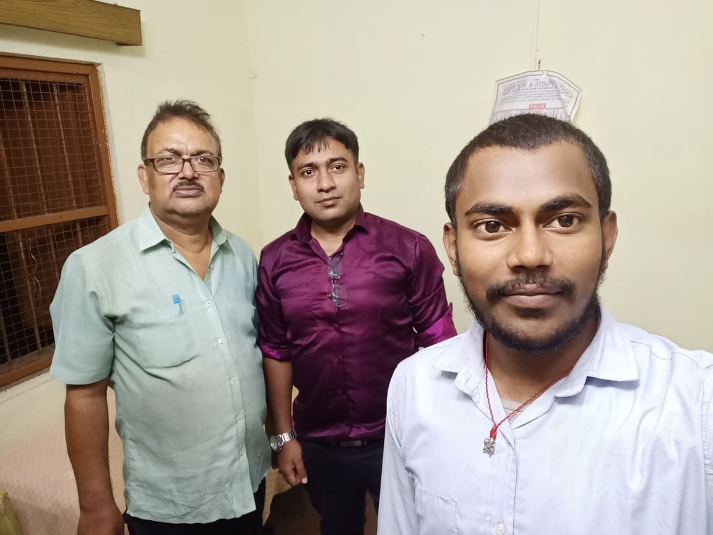

Bharat ki vaigyanik virasat - From 1881 to 3026. These original archival materials form the scientific foundation of Bharat AGI 3026 Quantum Brain and Low-Power Nano-Materials Research with NIT Jamshedpur.

The foundational work of classical electromagnetism, presenting Maxwell's equations that unified electricity, magnetism, and light. Published in 1881 by Clarendon Press, Oxford, this second edition consolidated the theoretical framework that underpins modern physics and engineering. Used in Rakshak Drone's electromagnetic navigation.

Correspondence dated October 4th, 1952, from Einstein to Professor Satyendra Nath Bose at University College of Science, Calcutta, Discussing the unified field theory and the field equation g_ik,l = 0, Einstein reflects on the generalization of the relativistic law of gravitation, emphasizing the equation-system as the natural generalization for gravitation.

Lecturer in Mathematics, Trinity College, Dublin. Oliver and Boyd, Edinburgh and London, 1956. Foundation for Quantum Sensors and Low-Power Nano-Materials Research with NIT Jamshedpur Lab. Used in Bharat AGI 3026 Quantum Brain architecture.

An Elementary Treatise on the Differential Calculus with Applications and Numerous Examples. Formerly Fellow of Sidney Sussex College, Cambridge. Macmillan and Co., London 1948. Used for Precision Farming algorithms (AGRICO Bangkok 2025 paper).

Owner: Dr. Sushant Kumar Ghosh Collection
64-year PhD in Quantum Devices. Owner of Rare Scientific Heritage Archive - From Maxwell to Einstein. Certified Archival Record, Catalog No. RSHA-ME-1881-1952, Museum Grade, Authenticated 2024, Preserved for Historical & Educational Purposes.
Role in Bharat AGI 3026:
• Research Mentor for Quantum AI & Low-Power Nano-Materials
• Provides access to NIT Jamshedpur lab for prototype development
• Guidance for IIT Hyderabad Incubator proposal
• Scientific validation of Maxwell's equations to Einstein's unified field theory applied to Bharat AGI
Why Judge Should Care: From 1881 to 1952 to 2026 to 3026 - This is not just a student project, this is lineage. Maxwell → Einstein → S.N. Bose → Dr. Sushant → Ashish (MVA Robotics). This is Bharat ki vaigyanik virasat in action.